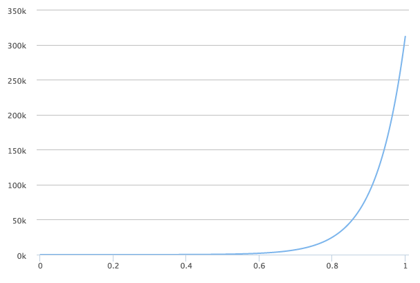
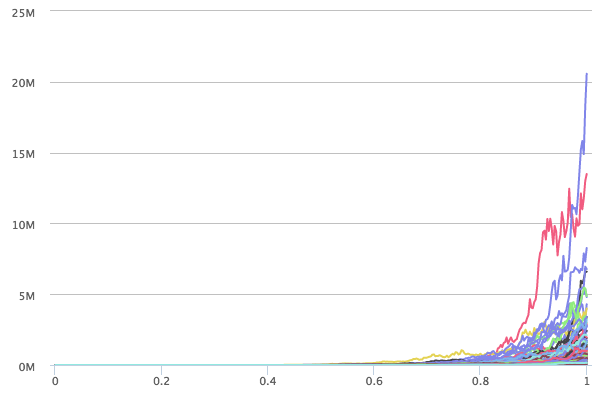

A Practical Approach to Model Error
In this post, I want to get a better sense of the effects of model error by simulating a very simple model for the spreading of a virus. It’s based on an analysis performed by Nassim Taleb. I used the simulation below in the scope of a workshop paper on the effect of cognitive biases. The published version of the paper can be found here.
Introduction
I don’t want to discuss the biology of a virus or its spreading, even though virus spreading is the topic of the simulation we’re about to do. I invite you to look elsewhere for that.
We mainly want to get a feel for the main message Taleb’s argument in his analysis linked above: The dangers of basing decisions on simple models for the spreading of virusses and the lack discussing the risks involved in analysing these models.
We do this by modelling the spreading of a virus by means of a simple geometric Brownian motion process. It’s the same process that is used in the (in)famous Black-Scholes model.
The differential form of the process is as follows:
\[ d S(t) = S(t) \mu dt + S(t) \sigma d W(t) \]
In this formula, \(\mu\) and \(\sigma\) are generally referred to as respectively drift and volatility. \(W(t)\) is a Wiener process, i.e. a continuous random walk.
Both \(\mu\) and \(\sigma\) can be dependant on time or on the current state. But for the sake of the argument, this need not be the case.
We can discretize this stochastic differential equation simply by replacing the differentials \(dt\) with small finite differences in time \(\Delta t\). The Wiener process can be approximated by a random walk with finite \(\Delta t\) as:
\[ \Delta W(t) \approx \sqrt{\Delta t} \, z \]
where \(z\) is normally distributed with mean 0 and variance 1, i.e.,
\[ z \sim\mathcal{N} (0,1) \]
In other words, we can simulate a continous geometric Brownian motion process defined above by means of the following discretized version:
\[ \Delta S(t) = S(t) \mu \Delta t + S(t) \sigma \sqrt{\Delta t} \, z \]
Taleb uses a different representation of this formula, based on the solution of this equation:
\[ S(t + \Delta t) = S(t) \exp \left[ \left( \mu - \frac{1}{2} \sigma^2 \right) \Delta t + \sigma \sqrt{\Delta t} \, z \right] \]
Enough formulas for now, let us take a look at the simulation
Simulation Approach
From a technical point of view, the simulation that follows in fact is run in a notebook run on Spark-Notebook. We started out developing an object-based representation of the problem, but quickly turned to a purely functional (recursive) approach since it is simpler to understand and reason about. We start, as Taleb does, from the assumption that every 20 days the number of infected people is doubled (doubling time of 20 days).
In a follow-up post, I may delve a little deeper in the actual implementation. Here, we want to focus on the results.
Non-stochastic version
Without any randomness in the system, the above dynamics reduces to:
\[ S(t) = S(t_0) e^{ \mu t} \]
With a doubling rate of say 20 days, we get over 300K after a year. That’s a lot. A creepy amount. And note that this is only for a a doubling rate of 20 days. In practice, many diseases may be spreading much faster.
The result is the plot below.

Stochastic version
We now add the stochasticity mentioned earlier. Adding this type of multiplicative noise corresponds for instance to uncertainty in the spreading of the virus. We generated 1000 timelines. The plot can be found below:

It immediately becomes clear that some of the curves tend to grow very rapidly! The worst case (given 1000 random histories) is over 20 milion after one year. Compare that to the just over 300K in the case of the non-stochastic version.
Please note that adding stochasticity does not influence the average over the different timelines. The average value of the 1000 sample trajectories after one year is by definition around the value derived for the non-stochastic version. In other words, the distribution is highly skewed. In this case, we are even dealing with a fat-tailed distribution.
Discussion
This post is becoming quite long already. Let us conclude with one important consequence of the above and leave further dicussion for a later stage. Although the above simulation is very rudimentary, it shows that relatively small variations1 to the rate of spreading cause the worst case scenario to be extremely far off the average scenario.
Footnotes
Even variations that are normally distributed, i.e., thin tailed.↩︎